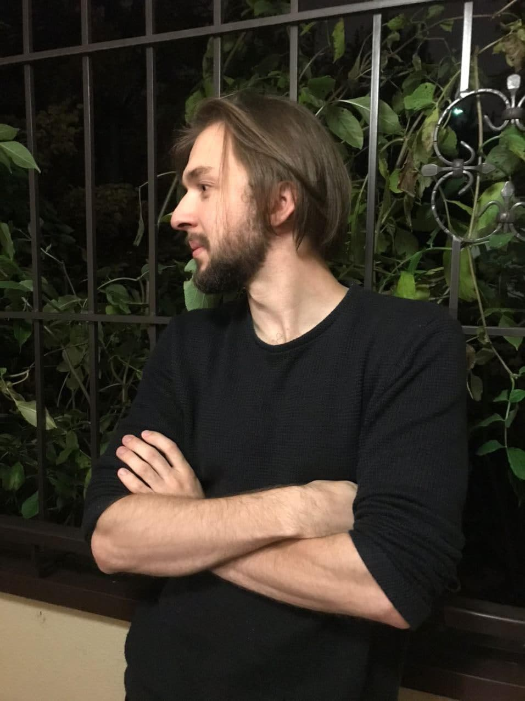
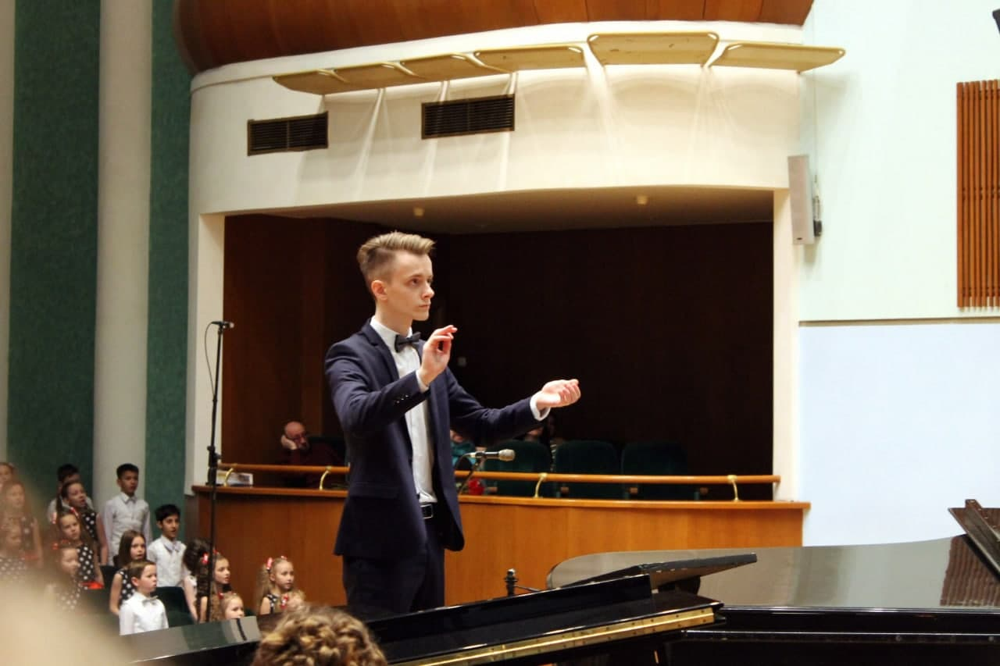
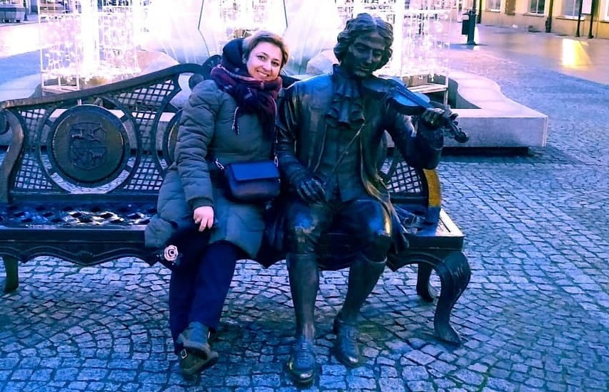
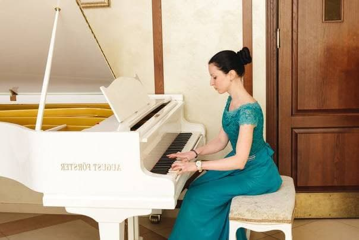

ADG -
(Ad
Dei
Gloriam)
Zespół ADG (Ad Dei Gloriam) powstał na początku roku 2020 jako zespół wspólnoty salezjańskiej przy parafii pw. Świętego Jana Chrzciciela w Mińsku na Białorusi. Nazwa zespołu jest skróconą formą łacińskej dewizy Towarzystwa Jezusowego i oznacza „Na Chwałę Bożą”. ADG jest wokalnym zespołem męskim i składa się z trzech osób śpiewających a cappella. Panowie są studentami Akademii Muzycznej w Mińsku a ich marzenia dotyczą muzyki.
Tenor Niko Bolkwadze
Tenor Niko Bolkwadze
Bas Władysław Sinitsa

Bas Władysław Sinitsa

Baryton Siargej Wiarbila
Baryton Siargej Wiarbila
Oczywiście każdy zespół męski musi mieć swoją muzę.
Tak naprawdę takie muzy w zespole są dwie.
Helena Sinitsa-organistka, autorka tekstów,
kierownik
i producent zespołu

Helena Sinitsa-organistka, autorka tekstów,
kierownik
i producent zespołu

Aleksandra Szczerbakowa
- kompozytor
i autorka opracowań muzycznych
Aleksandra Szczerbakowa
- kompozytor
i autorka opracowań muzycznych